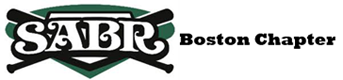

Hi there. You are viewing 2012 event that has already happened. For the latest, please visit http://baseballhackday.com/.
Boston
Baseball
Hack Day
About
Are you a web developer, designer or a hack programmer who is interested in baseball? Or a passionate baseball fan with ideas?
Boston Baseball Hack Day is a one-day hacking event where area baseball minds come together, form a team, and collaborate to create baseball-related project and bring an idea to life. The goal of the day is to bring creative minds into one room and see what they can come up within limited time. The theme, obviously, is baseball, and the project could be a tool, simple web app, website, or data visualization (but not limited to). Register now to attend. http://baseballhackday.eventbrite.com/
It is also a great to place to network and socialize among like-minded people.
At the end of the day, projects will be judged by area experts, and a brief awards ceremony will conclude the event.
Our distinguished panel of judges:
- Ben Fry
- An information designer Ben is principal of Fathom, a design and software consultancy in Boston. He is a co-developer of Processing, an open source programming environment for teaching computational design and sketching interactive media software. He is the author of Visualizing Data published by O'Reilly. In 2007, Casey Reas and Ben published Processing: A Programming Handbook for Visual Designers and Artists with MIT Press, and in 2010, they published Getting Started with Processing with O'Reilly. Read Ben's interview with Slate. Follow him: @ben_fry
- Andy Andres
- Andy, a professor at Boston University, teaches Sabermetrics 101 at Tufts University and MIT's Science of Baseball summer program. He also works as Fenway Park Datacaster/Stringer for mlb.com and MLBAM (Gameday), and writes columns for BaseballHQ.com. Read an article about him in BU's Collegian. Follow him: @sabermetrics101
- Matt Pepin
- Matt is sports editor at Boston.com and directs the online presentation of Boston sports news and features created by Boston.com producers and Globe sports reporters. He has been with Boston.com since 2009. Prior to that, he was sports editor at the Times Herald-Record and Varsity845.com in Middletown, N.Y., and sports editor at the New Haven Register in Connecticut. Follow him: @mattpep15
New to hack days? No need to fear. Therell be people of all skill levels and skill sets participating. And here are some resources to get you prepared.
Baseball Hack Day is free to attend, thanks to our sponsor, The Boston Globe, but registration is required. So register now.
RECAP
Event was success and over 35 hackers participated. Read the recap of the event from Boston.com by Matt Pepin: "Clever concepts created at Boston Baseball Hack Day" and on Beta.Boston.com: "Baseball Hack Day Recap".
Winner:
- Rally Cry - bit.ly/rally-cry bit.ly/rally-cry-billboard
- by John Hamilton, Kenji Ross, Mike Paulo, Doug Pfeffer
Honorable mention:
- Red Sox Wall of wWar - wwar.herokuapp.com
- by Jeffrey Chupp, Adam Darowski, Adam Bailey
- What's that in hot dogs? - whatsthatinhotdogs.com
- by Rory MacKean, Ted Lawless, Matthew Shanley, Kyle Fiedler, Chris Adams
- Fan Cheer - www.fan-cheer.com
- by Krikor Krumlian, Matt Veitas, Spencer Sanchez
- Visualizing uniform numbers
- by Marc Neuwirth
Other Projects:
- Baseball Literature.com - baseballliterature.com
- by Jay Hurd
- Baseball Scrap Book - baseballscrapbook.info
- by Travis Briggs
- NCAA baseball stats scraper
- by Maura Wilder, Jason Lefkowitz
- State of Rivalry - stateofrivalry.com
- by David Thyresson, Tom Giratikanon, Daigo Fujiwara, Takashi Seki
SCHEDULE
- 8:30-9:00
- Registration, meet and greet, and coffee.
- 9:00-9:30
- Welcome, introductions, and pitch
- 9:30-5:30
- Code! (Lunch will be served)
- 5:30-6:00
- Presentation, judging and awards
- *6:30
- optional beer social -- location to be decided later.
You need to bring a lap top computer, power strip and your ideas and skills.
SPONSORS
The Boston Globe
Boston.com
Hacks/Hackers Boston- 
Society of American Baseball Research Boston Chapter - and more...
Support the event!
Have something youd like to contribute to the hack day? Were looking for data sources, prizes, sponsorship, volunteering and wed love to hear from you. Email Daigo Fujiwara: dfujiwara@globe.com
THE VENUE
The Boston Globe (Third floor in "The Link")
135 Morrissey Blvd, Boston, MA View in google mapDirections: By Driving
From I-93 Northbound/Southbound, take exit 15 for Columbia Rd toward J.F.K Library. At the Columbia Road rotary, take the first exit to right, onto William T Morrissey Blvd. The Boston Globe will be on your right, about 0.4 miles. Parking is available in front of building. If the lot is full, there is parking in the back. Go around the building and park passed the green trucks.
By MBTA
Take Red Line to JFK/UMass. About 10 min walk toward south/J.F.K. Library on Morrissey Blvd (You will pass Shaw's Supermarket on your right).
At the Building:
Enter through the front door, you need to sign your name at the security desk. Meeting is in "The Link" (third floor of the building), by the cafeteria (closed on Saturday). There will be signs.
RESOURCES
Were collecting APIs, tools and data sources on a public Google doc. Be sure to add your favorites!
https://docs.google.com/document/d/ 1ERjzJk2l4lmsq3D11XDH0lL7d8PYCqqBkpj4xN1da-w/edit
...or shortened as: http://j.mp/2012bbhack
REGISTER NOW
The event is free. Register Now from Eventbrite page.